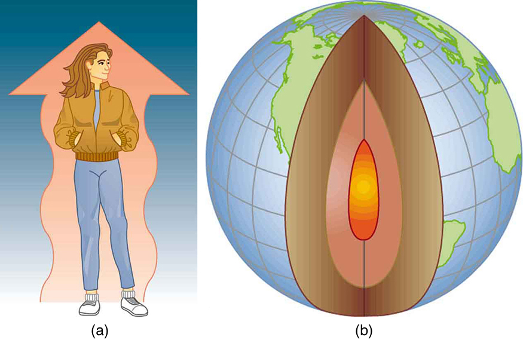
- Define heat as transfer of energy.
InWork, Energy, and Energy Resources, we defined work as force times distance and learned that work done on an object changes its kinetic energy. We also saw inTemperature, Kinetic Theory, and the Gas Lawsthat temperature is proportional to the (average) kinetic energy of atoms and molecules. We say that a thermal system has a certain internal energy: its internal energy is higher if the temperature is higher. If two objects at different temperatures are brought in contact with each other, energy is transferred from the hotter to the colder object until equilibrium is reached and the bodies reach thermal equilibrium (i.e., they are at the same temperature). No work is done by either object, because no force acts through a distance. The transfer of energy is caused by the temperature difference, and ceases once the temperatures are equal. These observations lead to the following definition ofheat: Heat is the spontaneous transfer of energy due to a temperature difference.
As noted inTemperature, Kinetic Theory, and the Gas Laws, heat is often confused with temperature. For example, we may say the heat was unbearable, when we actually mean that the temperature was high. Heat is a form of energy, whereas temperature is not. The misconception arises because we are sensitive to the flow of heat, rather than the temperature.
Owing to the fact that heat is a form of energy, it has the SI unit ofjoule(J). Thecalorie(cal) is a common unit of energy, defined as the energy needed to change the temperature of 1.00 g of water by \(1.00^oC\) —specifically, between \(14.5^oC\) and \(15.5^oC\), since there is a slight temperature dependence. Perhaps the most common unit of heat is thekilocalorie(kcal), which is the energy needed to change the temperature of 1.00 kg of water by \(1.00^oC\). Since mass is most often specified in kilograms, kilocalorie is commonly used. Food calories (given the notation Cal, and sometimes called “big calorie”) are actually kilocalories \((1 \, kilocalorie = 1000 \, calories)\), a fact not easily determined from package labeling.
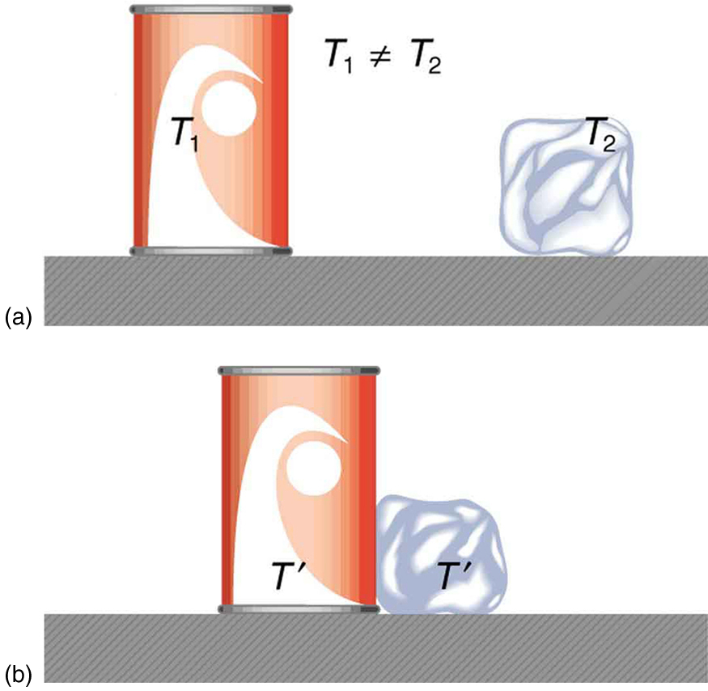
It is also possible to change the temperature of a substance by doing work. Work can transfer energy into or out of a system. This realization helped establish the fact that heat is a form of energy. James Prescott Joule (1818–1889) performed many experiments to establish themechanical equivalentof heat—the work needed to produce the same effects as heat transfer. In terms of the units used for these two terms, the best modern value for this equivalence is
We consider this equation as the conversion between two different units of energy.
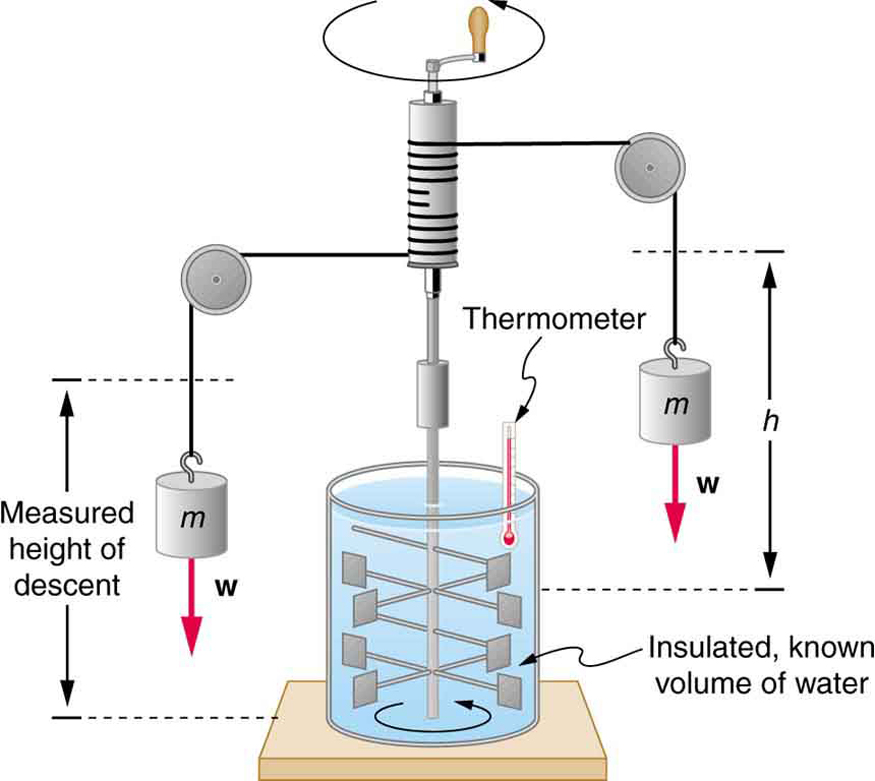
Figure shows one of Joule’s most famous experimental setups for demonstrating the mechanical equivalent of heat. It demonstrated that work and heat can produce the same effects, and helped establish the principle of conservation of energy. Gravitational potential energy (PE) (work done by the gravitational force) is converted into kinetic energy (KE), and then randomized by viscosity and turbulence into increased average kinetic energy of atoms and molecules in the system, producing a temperature increase. His contributions to the field of thermodynamics were so significant that the SI unit of energy was named after him.
Heat added or removed from a system changes its internal energy and thus its temperature. Such a temperature increase is observed while cooking. However, adding heat does not necessarily increase the temperature. An example is melting of ice; that is, when a substance changes from one phase to another. Work done on the system or by the system can also change the internal energy of the system. Joule demonstrated that the temperature of a system can be increased by stirring. If an ice cube is rubbed against a rough surface, work is done by the frictional force. A system has a well-defined internal energy, but we cannot say that it has a certain “heat content” or “work content”. We use the phrase “heat transfer” to emphasize its nature.
Exercise
Two samples (A and B) of the same substance are kept in a lab. Someone adds 10 kilojoules (kJ) of heat to one sample, while 10 kJ of work is done on the other sample. How can you tell to which sample the heat was added?
Heat and work both change the internal energy of the substance. However, the properties of the sample only depend on the internal energy so that it is impossible to tell whether heat was added to sample A or B.
📖 OpenStax College Physics, Section 14.1. openstax.org · CC BY 4.0
- Observe heat transfer and change in temperature and mass.
- Calculate final temperature after heat transfer between two objects.
One of the major effects of heat transfer is temperature change: heating increases the temperature while cooling decreases it. We assume that there is no phase change and that no work is done on or by the system. Experiments show that the transferred heat depends on three factors—the change in temperature, the mass of the system, and the substance and phase of the substance.
![Figure a shows a copper-colored cylinder of mass m and temperature change delta T. The heat Q, shown as a wavy rightward horizontal arrow, is transferred to the cylinder from the left. To the right of this image is a similar image, except that the heat transferred Q prime is twice the heat Q. The temperature change of this second cylinder, which is also labeled m, is two delta T. This cylinder is surrounded by small black wavy lines radiating outward. Figure b shows the same two cylinders as in Figure a. The left cylinder is labeled m and delta T and has a wavy heat arrow pointing at it from the left that is labeled Q. The right cylinder is labeled two m and delta T and has a wavy heat arrow pointing to it from the left labeled Q prime equals two Q. Figure c shows the same copper cylinder of mass m and with temperature change delta T, with heat Q being transferred to it. To the right of this cylinder, Q prime equals ten point eight times Q is being transferred to another cylinder filled with water whose mass and change in temperature are the same as that of the copper cylinder.](images/ch14/fig14-4-figure-a-shows-a-copper-colored-cylinder.jpg)
The dependence on temperature change and mass are easily understood. Owing to the fact that the (average) kinetic energy of an atom or molecule is proportional to the absolute temperature, the internal energy of a system is proportional to the absolute temperature and the number of atoms or molecules. Owing to the fact that the transferred heat is equal to the change in the internal energy, the heat is proportional to the mass of the substance and the temperature change. The transferred heat also depends on the substance so that, for example, the heat necessary to raise the temperature is less for alcohol than for water. For the same substance, the transferred heat also depends on the phase (gas, liquid, or solid).
Heat Transfer and Temperature Change
The quantitative relationship between heat transfer and temperature change contains all three factors: \[Q = mc\Delta T,\] where \(Q\) is the symbol for heat transfer, \(m\) is the mass of the substance, and \(\Delta T\) is the change in temperature. The symbol \(c\) stands forspecific heatand depends on the material and phase. The specific heat is the amount of heat necessary to change the temperature of 1.00 kg of mass by \(1.00^oC\). The specific heat \(c\) is a property of the substance; its SI unit is \(J/(kg \cdot K)\) or \(J/(kg \cdot ^oC)\). Recall that the temperature change \((\Delta T)\) is the same in units of kelvin and degrees Celsius. If heat transfer is measured in kilocalories, thenthe unit of specific heatis \(kcal/(kg \cdot ^oC)\).
Values of specific heat must generally be looked up in tables, because there is no simple way to calculate them. In general, the specific heat also depends on the temperature. Table lists representative values of specific heat for various substances. Except for gases, the temperature and volume dependence of the specific heat of most substances is weak. We see from this table that the specific heat of water is five times that of glass and ten times that of iron, which means that it takes five times as much heat to raise the temperature of water the same amount as for glass and ten times as much heat to raise the temperature of water as for iron. In fact, water has one of the largest specific heats of any material, which is important for sustaining life on Earth.
A 0.500 kg aluminum pan on a stove is used to heat 0.250 liters of water from \(20.0^oC\) to \(80.0^oC\).
(a) How much heat is required? What percentage of the heat is used to raise the temperature of (b) the pan and (c) the water?
The pan and the water are always at the same temperature. When you put the pan on the stove, the temperature of the water and the pan is
increased by the same amount. We use the equation for the heat transfer for the given temperature change and mass of water and aluminum. The specific heat values for water and aluminum are given in Table .
Because water is in thermal contact with the aluminum, the pan and the water are at the same temperature.
In this example, the heat transferred to the container is a significant fraction of the total transferred heat. Although the mass of the pan is twice that of the water, the specific heat of water is over four times greater than that of aluminum. Therefore, it takes a bit more than twice the heat to achieve the given temperature change for the water as compared to the aluminum pan.
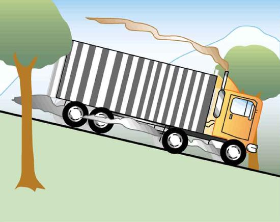
Truck brakes used to control speed on a downhill run do work, converting gravitational potential energy into increased internal energy (higher temperature) of the brake material. This conversion prevents the gravitational potential energy from being converted into kinetic energy of the truck. The problem is that the mass of the truck is large compared with that of the brake material absorbing the energy, and the temperature increase may occur too fast for sufficient heat to transfer from the brakes to the environment.
Calculate the temperature increase of 100 kg of brake material with an average specific heat of \(800.0 \, J/kg \cdot ^oC\) if the material retains 10% of the energy from a 10,000-kg truck descending 75.0 m (in vertical displacement) at a constant speed.
If the brakes are not applied, gravitational potential energy is converted into kinetic energy. When brakes are applied, gravitational potential energy is converted into internal energy of the brake material. We first calculate the gravitational potential energy \((Mgh)\) that the entire truck loses in its descent and then find the temperature increase produced in the brake material alone.
This temperature is close to the boiling point of water. If the truck had been traveling for some time, then just before the descent, the brake temperature would likely be higher than the ambient temperature. The temperature increase in the descent would likely raise the temperature of the brake material above the boiling point of water, so this technique is not practical. However, the same idea underlies the recent hybrid technology of cars, where mechanical energy (gravitational potential energy) is converted by the brakes into electrical energy (battery).
| Substances | Specific heat (c) | |
|---|---|---|
| Solids | \(J/kg\cdot^oC\) | \(kcal/kg\cdot^oC\) |
| Aluminum | 900 | 0.215 |
| Asbestos | 800 | 0.19 |
| Concrete, granite (average) | 840 | 0.20 |
| Copper | 387 | 0.0924 |
| Glass | 840 | 0.20 |
| Gold | 129 | 0.0308 |
| Human body (average at 37 °C) | 3500 | 0.83 |
| Ice (average, -50°C to 0°C) | 2090 | 0.50 |
| Iron, steel | 452 | 0.108 |
| Lead | 128 | 0.0305 |
| Silver | 235 | 0.0562 |
| Wood | 1700 | 0.4 |
| Liquids | ||
| Benzene | 1740 | 0.415 |
| Ethanol | 2450 | 0.586 |
| Glycerin | 2410 | 0.576 |
| Mercury | 139 | 0.0333 |
| Water (15.0 °C) | 4186 | 1.000 |
| Gases3 | ||
| Air (dry) | 721 (1015) | 0.172 (0.242) |
| Ammonia | 1670 (2190) | 0.399 (0.523) |
| Carbon dioxide | 638 (833) | 0.152 (0.199) |
| Nitrogen | 739 (1040) | 0.177 (0.248) |
| Oxygen | 651 (913) | 0.156 (0.218) |
| Steam (100°C) | 1520 (2020) | 0.363 (0.482) |
Note that Example is an illustration of the mechanical equivalent of heat. Alternatively, the temperature increase could be produced by a blow torch instead of mechanically.
Suppose you pour 0.250 kg of \(20.0^oC\) water (about a cup) into a 0.500-kg aluminum pan off the stove with a temperature of \(150^oC\). Assume that the pan is placed on an insulated pad and that a negligible amount of water boils off. What is the temperature when the water and pan reach thermal equilibrium a short time later?
The pan is placed on an insulated pad so that little heat transfer occurs with the surroundings. Originally the pan and water are not in thermal equilibrium: the pan is at a higher temperature than the water. Heat transfer then restores thermal equilibrium once the water and pan are in contact. Because heat transfer between the pan and water takes place rapidly, the mass of evaporated water is negligible and the magnitude of the heat lost by the pan is equal to the heat gained by the water. The exchange of heat stops once a thermal equilibrium between the pan and the water is achieved. The heat exchange can be written as \(|Q_{hot}| = Q_{cold}.\)
and insert the numerical values:
This is a typicalcalorimetryproblem—two bodies at different temperatures are brought in contact with each other and exchange heat until a common temperature is reached. Why is the final temperature so much closer to20.0ºCthan150ºC? The reason is that water has a greater specific heat than most common substances and thus undergoes a small temperature change for a given heat transfer. A large body of water, such as a lake, requires a large amount of heat to increase its temperature appreciably. This explains why the temperature of a lake stays relatively constant during a day even when the temperature change of the air is large. However, the water temperature does change over longer times (e.g., summer to winter).
TAKE-HOME EXPERIMENT: TEMPERATURE CHANGE OF LAND AND WATER
What heats faster, land or water?
To study differences in heat capacity:
Which sample cools off the fastest? This activity replicates the phenomena responsible for land breezes and sea breezes.
Exercise
If 25 kJ is necessary to raise the temperature of a block from25ºCto30ºC, how much heat is necessary to heat the block from45ºCto50ºC?
The heat transfer depends only on the temperature difference. Since the temperature differences are the same in both cases, the same 25 kJ is necessary in the second case.
1 The values for solids and liquids are at constant volume and at25ºC, except as noted.2 These values are identical in units ofcal/g⋅ºC.3 cv at constant volume and at20.0ºC, except as noted, and at 1.00 atm average pressure. Values in parentheses are \(c_p\) at a constant pressure of 1.00 atm.
specific heatthe amount of heat necessary to change the temperature of 1.00 kg of a substance by 1.00 ºC
📖 OpenStax College Physics, Section 14.2. openstax.org · CC BY 4.0
- Examine heat transfer.
- Calculate final temperature from heat transfer.
So far we have discussed temperature change due to heat transfer. No temperature change occurs from heat transfer if ice melts and becomes liquid water (i.e., during a phase change). For example, consider water dripping from icicles melting on a roof warmed by the Sun. Conversely, water freezes in an ice tray cooled by lower-temperature surroundings.
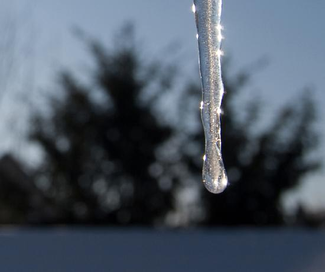
Energy is required to melt a solid because the cohesive bonds between the molecules in the solid must be broken apart such that, in the liquid, the molecules can move around at comparable kinetic energies; thus, there is no rise in temperature. Similarly, energy is needed to vaporize a liquid, because molecules in a liquid interact with each other via attractive forces. There is no temperature change until a phase change is complete. The temperature of a cup of soda initially at \(0^oC\) stays at \(0^oC\) until all the ice has melted. Conversely, energy is released during freezing and condensation, usually in the form of thermal energy. Work is done by cohesive forces when molecules are brought together. The corresponding energy must be given off (dissipated) to allow them to stay together ( see Figure
The energy involved in a phase change depends on two major factors: the number and strength of bonds or force pairs. The number of bonds is proportional to the number of molecules and thus to the mass of the sample. The strength of forces depends on the type of molecules. The heat \(Q\) required to change the phase of a sample of mass \(m\) is given by \[ Q = mL_f (melting/freezing),\] \[Q = mL_v (vaporization/condensation),\] where the latent heat of fusion, \(L_f\), and latent heat of vaporization, \(L_v\), are material constants that are determined experimentally. See (Table .
![Figure a shows a four by four square lattice object labeled solid. The lattice is made of four rows of red spheres, with each row containing four spheres. The spheres are attached together horizontally and vertically by springs, defining vacant square spaces between the springs. A short arrow points radially outward from each sphere. The arrows on the different spheres point in different directions but are the same length, and one of them terminates at a dashed circle that is labeled limits of motion. To the right of this object are shown two curved arrows. The upper curved arrow points rightward and is labeled “energy input” and “melt.” The lower arrow points leftward and is labeled “energy output” and “freeze.” To the right of the curved arrows is a drawing labeled liquid. This drawing contains nine red spheres arranged randomly, with a curved arrow emanating from each sphere. The arrows are of different lengths and point in different directions.Figure b shows a drawing labeled liquid that is essentially the same as that of figure a. To the right of this drawing are shown two curved arrows. The upper curved arrow points rightward and is labeled “energy input” and “boil.” The lower arrow points leftward and is labeled “energy output” and “condense.” To the right of the curved arrows is another drawing of randomly arranged red spheres that is labeled gas. This drawing contains eight red spheres and each sphere has a straight or a curved arrow emanating from it. Compared to the drawing to the left that is labeled liquid, these arrows are longer and the red spheres are more widely spaced.](images/ch14/fig14-7-figure-a-shows-a-four-by-four-square-lat.jpg)
Latent heat is measured in units of J/kg. Both \(L_f\) and \(L_v\) depend on the substance, particularly on the strength of its molecular forces as noted earlier. \(L_f\) and \(L_v\) are collectively calledlatent heat coefficients. They arelatent, or hidden, because in phase changes, energy enters or leaves a system without causing a temperature change in the system; so, in effect, the energy is hidden. Table lists representative values of \(L_f\) and \(L_v\), together with melting and boiling points.
The table shows that significant amounts of energy are involved in phase changes. Let us look, for example, at how much energy is needed to melt a kilogram of ice at \(0^oC\) to produce a kilogram of water at \(0^oC\). Using the equation for a change in temperature and the value for water from Table , we find that \[Q = mL_f = (1.0 \, kg)(334 \, kJ/kg) = 334 \, kJ\] is the energy to melt a kilogram of ice. This is a lot of energy as it represents the same amount of energy needed to raise the temperature of 1 kg of liquid water from \(0^oC\) to \(79.8^oC\). Even more energy is required to vaporize water; it would take 2256 kJ to change 1 kg of liquid water at the normal boiling point \((100^oC\) at atmospheric pressure) to steam (water vapor). This example shows that the energy for a phase change is enormous compared to energy associated with temperature changes without a phase change.
| \(L_f\) | \(L_v\) | |||||
|---|---|---|---|---|---|---|
| Substance | Melting point (ºC) | kJ/kg | kcal/kg | Boiling point (°C) | kJ/kg | kcal/kg |
| Helium | −269.7 | 5.23 | 1.25 | −268.9 | 20.9 | 4.99 |
| Hydrogen | −259.3 | 58.6 | 14.0 | −252.9 | 452 | 108 |
| Nitrogen | −210.0 | 25.5 | 6.09 | −195.8 | 201 | 48.0 |
| Oxygen | −218.8 | 13.8 | 3.30 | −183.0 | 213 | 50.9 |
| Ethanol | −114 | 104 | 24.9 | 78.3 | 854 | 204 |
| Ammonia | −75 | 108 | −33.4 | 1370 | 327 | |
| Mercury | −38.9 | 11.8 | 2.82 | 357 | 272 | 65.0 |
| Water | 0.00 | 334 | 79.8 | 100.0 | 22562 | 5393 |
| Sulfur | 119 | 38.1 | 9.10 | 444.6 | 326 | 77.9 |
| Lead | 327 | 24.5 | 5.85 | 1750 | 871 | 208 |
| Antimony | 631 | 165 | 39.4 | 1440 | 561 | 134 |
| Aluminum | 660 | 380 | 90 | 2450 | 11400 | 2720 |
| Silver | 961 | 88.3 | 21.1 | 2193 | 2336 | 558 |
| Gold | 1063 | 64.5 | 15.4 | 2660 | 1578 | 377 |
| Copper | 1083 | 134 | 32.0 | 2595 | 5069 | 1211 |
| Uranium | 1133 | 84 | 20 | 3900 | 1900 | 454 |
| Tungsten | 3410 | 184 | 44 | 5900 | 4810 | 1150 |
Phase changes can have a tremendous stabilizing effect even on temperatures that are not near the melting and boiling points, because evaporation and condensation (conversion of a gas into a liquid state) occur even at temperatures below the boiling point.Take, for example, the fact that air temperatures in humid climates rarely go above \(35.0^oC\),
which is because most heat transfer goes into evaporating water into the air. Similarly, temperatures in humid weather rarely fall below the dew point because enormous heat is released when water vapor condenses.
We examine the effects of phase change more precisely by considering adding heat into a sample of ice at \(-20^oC\) (Figure . The temperature of the ice rises linearly, absorbing heat at a constant rate of \(0.50 \, cal/g \cdot ^oC\) until it reaches \(0^oC\). Once at this temperature, the ice begins to melt until all the ice has melted, absorbing 79.8 cal/g of heat. The temperature remains constant at \(0^oC\) during this phase change. Once all the ice has melted, the temperature of the liquid water rises, absorbing heat at a new constant rate of \(1.00 \, cal/g \cdot ^oC\). At \(100^oC\), the water begins to boil and the temperature again remains constant while the water absorbs 539 cal/g of heat during this phase change. When all the liquid has become steam vapor, the temperature rises again, absorbing heat at a rate of \(0.482 \, cal/g \cdot ^oC\).
![The figure shows a two-dimensional graph with temperature plotted on the vertical axis from minus twenty to one hundred and twenty degrees Celsius. The horizontal axis is labeled delta Q divided by m and, in parentheses, calories per gram. This horizontal axis goes from zero to eight hundred. A line segment labeled ice extends upward and rightward at about 60 degrees above the horizontal from the point minus twenty degrees Celsius, zero delta Q per m to the point zero degrees Celsius and about 40 delta Q per m. A horizontal line segment labeled ice and water extends rightward from this point to approximately 120 delta Q per m. A line segment labeled water then extends up and to the right at approximately 45 degrees above the horizontal to the point one hundred degrees Celsius and about 550 delta Q per m. From this latter point a horizontal line segment labeled water plus steam extends to the right to about 780 delta Q per m. From here, a final line segment labeled steam extends up and to the right at about 60 degrees above the horizontal to about one hundred and twenty degrees Celsius and 800 delta Q per m.](images/ch14/fig14-8-the-figure-shows-a-two-dimensional-graph.jpg)
Water can evaporate at temperatures below the boiling point. More energy is required than at the boiling point, because the kinetic energy of water molecules at temperatures below \(100^oC\) is less than that at \(100^oC\), hence less energy is available from random thermal motions. Take, for example, the fact that, at body temperature, perspiration from the skin requires a heat input of 2428 kJ/kg, which is about 10 percent higher than the latent heat of vaporization at \(100^oC\). This heat comes from the skin, and thus provides an effective cooling mechanism in hot weather. High humidity inhibits evaporation, so that body temperature might rise, leaving unevaporated sweat on your brow.
Three ice cubes are used to chill a soda at \(20^oC\) with mass \(m_{soda} = 0.25 \, kg\). The ice is at \(0^oC\) and each ice cube has a mass of 6.0 g. Assume that the soda is kept in a foam container so that heat loss can be ignored. Assume the soda has the same heat capacity as water. Find the final temperature when all ice has melted.
The ice cubes are at the melting temperature of \(0^oC\). Heat is transferred from the soda to the ice for melting. Melting of ice occurs in two steps: first the phase change occurs and solid (ice) transforms into liquid water at the melting temperature, then the temperature of this water rises. Melting yields water at \(0^oC\), so more heat is transferred from the soda to this water until the water plus soda system reaches thermal equilibrium, \[Q_{ice} = -Q_{soda}.\] The heat transferred to the ice is \(Q_{ice} = m_{ice}L_f + m_{ice} c_w (T_f - 0^oC).\). The heat given off by the soda is \(Q_{soda} = m_{soda}c_w (T_f - 20^oC).\) Since no heat is lost, \(Q_{ice} = -Q_{soda}\), so that \[m_{ice}Lf + m_{ice} c_w (T_f - 0^oC) = -m_{soda} c_w (T_f - 20^oC).\] Bring all terms involving \(T_f\) on the left-hand-side and all other terms on the right-hand-side. Solve for the unknown quantity \(T_f\): \[T_f = \dfrac{m_{soda} c_w (20^oC) - m_{ice} L_f}{(m_{soda} + m_{ice}) c_w}.\]
This example illustrates the enormous energies involved during a phase change. The mass of ice is about 7 percent the mass of water but leads to a noticeable change in the temperature of soda. Although we assumed that the ice was at the freezing temperature, this is incorrect: the typical temperature is \(-6^oC\). However, this correction gives a final temperature that is essentially identical to the result we found. Can you explain why?
We have seen that vaporization requires heat transfer to a liquid from the surroundings, so that energy is released by the surroundings. Condensation is the reverse process, increasing the temperature of the surroundings. This increase may seem surprising, since we associate condensation with cold objects—the glass in the figure, for example. However, energy must be removed from the condensing molecules to make a vapor condense. The energy is exactly the same as that required to make the phase change in the other direction, from liquid to vapor, and so it can be calculated from \(Q = mL_v\).
Real-World Application
Energy is also released when a liquid freezes. This phenomenon is used by fruit growers in Florida to protect oranges when the temperature is close to the freezing point \((0^oC)\). Growers spray water on the plants in orchards so that the water freezes and heat is released to the growing oranges on the trees. This prevents the temperature inside the orange from dropping below freezing, which would damage the fruit.
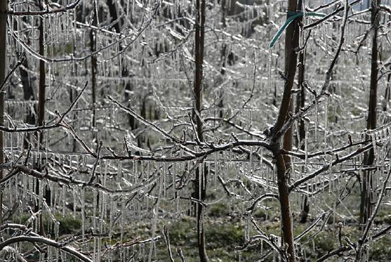
Sublimationis the transition from solid to vapor phase. You may have noticed that snow can disappear into thin air without a trace of liquid water, or the disappearance of ice cubes in a freezer. The reverse is also true: Frost can form on very cold windows without going through the liquid stage. A popular effect is the making of “smoke” from dry ice, which is solid carbon dioxide. Sublimation occurs because the equilibrium vapor pressure of solids is not zero. Certain air fresheners use the sublimation of a solid to inject a perfume into the room. Moth balls are a slightly toxic example of a phenol (an organic compound) that sublimates, while some solids, such as osmium tetroxide, are so toxic that they must be kept in sealed containers to prevent human exposure to their sublimation-produced vapors.
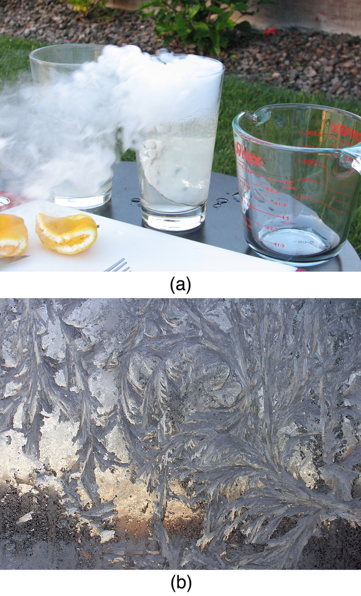
All phase transitions involve heat. In the case of direct solid-vapor transitions, the energy required is given by the equation \(Q = mL_s\), where \(L_s\) is theheat of sublimation, which is the energy required to change 1.00 kg of a substance from the solid phase to the vapor phase. \(L_s\) is analogous to \(L_f\) and \(L_v\), and its value depends on the substance. Sublimation requires energy input, so that dry ice is an effective coolant, whereas the reverse process (i.e., frosting) releases energy. The amount of energy required for sublimation is of the same order of magnitude as that for other phase transitions.
The material presented in this section and the preceding section allows us to calculate any number of effects related to temperature and phase change. In each case, it is necessary to identify which temperature and phase changes are taking place and then to apply the appropriate equation. Keep in mind that heat transfer and work can cause both temperature and phase changes.
Exercise
Why does snow remain on mountain slopes even when daytime temperatures are higher than the freezing temperature?
Snow is formed from ice crystals and thus is the solid phase of water. Because enormous heat is necessary for phase changes, it takes a certain amount of time for this heat to be accumulated from the air, even if the air is above \(0^oC\). The warmer the air is, the faster this heat exchange occurs and the faster the snow melts.
1 Values quoted at the normal melting and boiling temperatures at standard atmospheric pressure (1 atm).2 At 37.0ºC (body temperature), the heat of vaporization \(L_v\) for water is 2430 kJ/kg or 580 kcal/kg3 At 37.0ºC (body temperature), the heat of vaporization \(L_v\) for water is 2430 kJ/kg or 580 kcal/kg
Paul Peter Urone (Professor Emeritus at California State University, Sacramento) and Roger Hinrichs (State University of New York, College at Oswego) with Contributing Authors: Kim Dirks (University of Auckland) and Manjula Sharma (University of Sydney). This work is licensed by OpenStax University Physics under aCreative Commons Attribution License (by 4.0).
Paul Peter Urone (Professor Emeritus at California State University, Sacramento) and Roger Hinrichs (State University of New York, College at Oswego) with Contributing Authors: Kim Dirks (University of Auckland) and Manjula Sharma (University of Sydney). This work is licensed by OpenStax University Physics under aCreative Commons Attribution License (by 4.0).
📖 OpenStax College Physics, Section 14.3. openstax.org · CC BY 4.0
- Discuss the different methods of heat transfer.
Equally as interesting as the effects of heat transfer on a system are the methods by which this occurs. Whenever there is a temperature difference, heat transfer occurs. Heat transfer may occur rapidly, such as through a cooking pan, or slowly, such as through the walls of a picnic ice chest. We can control rates of heat transfer by choosing materials (such as thick wool clothing for the winter), controlling air movement (such as the use of weather stripping around doors), or by choice of color (such as a white roof to reflect summer sunlight). So many processes involve heat transfer, so that it is hard to imagine a situation where no heat transfer occurs. Yet every process involving heat transfer takes place by only three methods:
![The figure shows a fireplace in a room. The fireplace is at the lower left side of the figure. There is a window at the right side of the room. From the window cold air enters into the room, and follows some curved blue arrows labeled convection to the fireplace. The air heated by the fire rises up the chimney following some red curved arrows, which are also labeled convection. Yellow wavy lines emanate from the flames of the fire into the room and are labeled radiation. Finally, a black curved line labeled conduction goes from beneath the logs of the fire and points into the floor under the room.](images/ch14/fig14-12-the-figure-shows-a-fireplace-in-a-room-t.jpg)
We examine these methods in some detail in the three following modules. Each method has unique and interesting characteristics, but all three do have one thing in common: they transfer heat solely because of a temperature difference Figure .
Exercise
Name an example from daily life (different from the text) for each mechanism of heat transfer.
📖 OpenStax College Physics, Section 14.4. openstax.org · CC BY 4.0
- Calculate thermal conductivity.
- Observe conduction of heat in collisions.
- Study thermal conductivities of common substances.
Your feet feel cold as you walk barefoot across the living room carpet in your cold house and then step onto the kitchen tile floor. This result is intriguing, since the carpet and tile floor are both at the same temperature. The different sensation you feel is explained by the different rates of heat transfer: the heat loss during the same time interval is greater for skin in contact with the tiles than with the carpet, so the temperature drop is greater on the tiles.
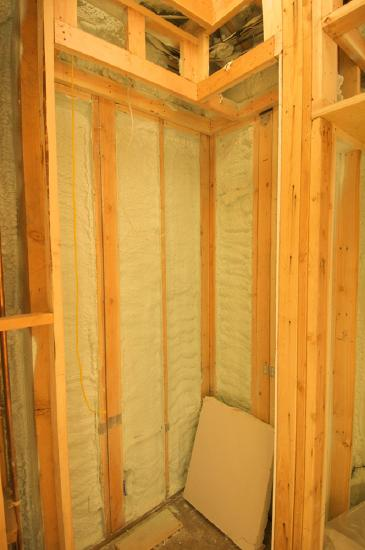
Some materials conduct thermal energy faster than others. In general, good conductors of electricity (metals like copper, aluminum, gold, and silver) are also good heat conductors, whereas insulators of electricity (wood, plastic, and rubber) are poor heat conductors. Figure shows molecules in two bodies at different temperatures. The (average) kinetic energy of a molecule in the hot body is higher than in the colder body. If two molecules collide, an energy transfer from the molecule with greater kinetic energy to the molecule with less kinetic energy occurs. The cumulative effect from all collisions results in a net flux of heat from the hot body to the colder body. The heat flux thus depends on the temperature difference \(\Delta T = T_{hot} - T_{cold}\) Therefore, you will get a more severe burn from boiling water than from hot tap water. Conversely, if the temperatures are the same, the net heat transfer rate falls to zero, and equilibrium is achieved. Owing to the fact that the number of collisions increases with increasing area, heat conduction depends on the cross-sectional area. If you touch a cold wall with your palm, your hand cools faster than if you just touch it with your fingertip.
![The figure shows a vertical line labeled “surface” that divides the figure in two. Just below the line is a horizontal rightward wavy arrow labeled Q, heat conduction. The area left of the surface line is labeled higher temperature and the area right of the surface line is labeled lower temperature. One spherical object, labeled “high energy before collision” is on the left bottom side, with an arrow from it pointing to the right and up toward the vertical midpoint of the surface line. There is another spherical object at the top left side close to the surface line with an arrow from it pointing to the left and up. A third spherical object labeled “low energy before collision” appears on the right top side with an arrow pointing from it to the left and down toward the vertical midpoint of the surface line. There is a final spherical object at the lower right side close to the surface line with an arrow pointing from it to the right and down. There are dotted lines coming from all the four particles, merging at the midpoint on the surface line.](images/ch14/fig14-14-the-figure-shows-a-vertical-line-labeled.jpg)
A third factor in the mechanism of conduction is the thickness of the material through which heat transfers. The figure below shows a slab of material with different temperatures on either side. Suppose that \(T_2\) is greater than \(T_1\) so that heat is transferred from left to right. Heat transfer from the left side to the right side is accomplished by a series of molecular collisions. The thicker the material, the more time it takes to transfer the same amount of heat. This model explains why thick clothing is warmer than thin clothing in winters, and why Arctic mammals protect themselves with thick blubber.
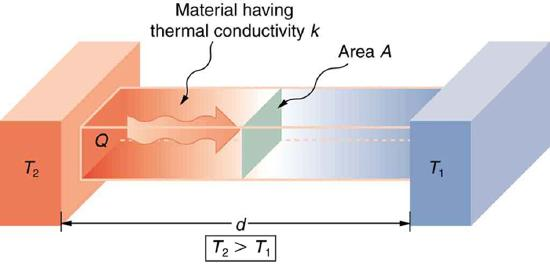
Lastly, the heat transfer rate depends on the material properties described by the coefficient ofthermal conductivity. All four factors are included in a simple equation that was deduced from and is confirmed by experiments. Therate of conductive heat transferthrough a slab of material, such as the one in Figure , is given by \[\dfrac{Q}{t} = \dfrac{kA(T_2 - T_!)}{d},\] where \(Q/t\) is the rate of heat transfer in watts or kilocalories per second, \(k\) s thethermal conductivityof the material, \(A\) and \(d\) are its surface area and thickness and \((T_2 - T_1)\) is the temperature difference across the slab. Table ives representative values of thermal conductivity.
A Styrofoam ice box has a total area of \(0.950 \, m^2\) and walls with an average thickness of 2.50 cm. The box contains ice, water, and canned beverages at \(0^oC\). The inside of the box is kept cold by melting ice. How much ice melts in one day if the ice box is kept in the trunk of a car at \(35.0^oC\)?
This question involves both heat for a phase change (melting of ice) and the transfer of heat by conduction. To find the amount of ice melted, we must find the net heat transferred. This value can be obtained by calculating the rate of heat transfer by conduction and multiplying by time.
The result of 3.44 kg, or about 7.6 lbs, seems about right, based on experience. You might expect to use about a 4 kg (7–10 lb) bag of ice per day. A little extra ice is required if you add any warm food or beverages.
Inspecting the conductivities in Table shows that Styrofoam is a very poor conductor and thus a good insulator. Other good insulators include fiberglass, wool, and goose-down feathers. Like Styrofoam, these all incorporate many small pockets of air, taking advantage of air’s poor thermal conductivity.
| Substance | Thermal conductivity |
|---|---|
| Air | 0.023 |
| Aluminum | 220 |
| Asbestos | 0.16 |
| Concrete brick | 0.84 |
| Copper | 390 |
| Cork | 0.042 |
| Down feathers | 0.025 |
| Fatty tissue (without blood) | 0.2 |
| Glass (average) | 0.84 |
| Glass wool | 0.042 |
| Gold | 318 |
| Ice | 2.2 |
| Plasterboard | 0.16 |
| Silver | 420 |
| Snow (dry) | 0.10 |
| Steel (stainless) | 14 |
| Steel iron | 80 |
| Styrofoam | 0.010 |
| Water | 0.6 |
| Wood | 0.08–0.16 |
| Wool | 0.04 |
Thermal Conductivities of Common Substances1
A combination of material and thickness is often manipulated to develop good insulators—the smaller the conductivity \(k\) and the larger the thickness \(d\), the better. The ratio of \(d/k\) will thus be large for a good insulator. The ratio \(d/k\) is called the \(R\)factor.The rate of conductive heat transfer is inversely proportional to \(R\). The larger the value of \(R\), the better the insulation. \(R\) factors are most commonly quoted for household insulation, refrigerators, and the like—unfortunately, it is still in non-metric units of \(ft^2 \cdot ^oF \cdot h/Btu\), although the unit usually goes unstated (1 British thermal unit [Btu] is the amount of energy needed to change the temperature of 1.0 lb of water by 1.0 °F). A couple of representative values are an \(R\) factor of 11 for 3.5-in-thick fiberglass batts (pieces) of insulation and an \(R\) factor of 19 for 6.5-in-thick fiberglass batts. Walls are usually insulated with 3.5-in batts, while ceilings are usually insulated with 6.5-in batts. In cold climates, thicker batts may be used in ceilings and walls.
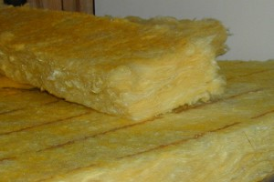
Note that in Table , the best thermal conductors—silver, copper, gold, and aluminum—are also the best electrical conductors, again related to the density of free electrons in them. Cooking utensils are typically made from good conductors.
Water is boiling in an aluminum pan placed on an electrical element on a stovetop. The sauce pan has a bottom that is 0.800 cm thick and 14.0 cm in diameter. The boiling water is evaporating at the rate of 1.00 g/s. What is the temperature difference across (through) the bottom of the pan?
Conduction through the aluminum is the primary method of heat transfer here, and so we use the equation for the rate of heat transfer and solve for the temperature difference.\[T_2 - T_1 = \dfrac{Q}{t} \left(\dfrac{d}{kA}\right).\]
The thickness of the pan, \(d = 0.800 \, cm = 8.0 \times 10^{-3} m\), the area of the pan, \(A = \pi(0.14/2)^2 \, m^2 = 1.54 \times 10^{-2} \, m^2\), and the thermal conductivity, \(k = 220 \, J/s \cdot m \cdot ^oC\).
The value for the heat transfer \(Q/t = 2.26 \, kW \, or 2256 \, J/s\) is typical for an electric stove. This value gives a remarkably small temperature difference between the stove and the pan. Consider that the stove burner is red hot while the inside of the pan is nearly \(100^oC\) because of its contact with boiling water. This contact effectively cools the bottom of the pan in spite of its proximity to the very hot stove burner. Aluminum is such a good conductor that it only takes this small temperature difference to produce a heat transfer of 2.26 kW into the pan.
Conduction is caused by the random motion of atoms and molecules. As such, it is an ineffective mechanism for heat transport over macroscopic distances and short time distances. Take, for example, the temperature on the Earth, which would be unbearably cold during the night and extremely hot during the day if heat transport in the atmosphere was to be only through conduction. In another example, car engines would overheat unless there was a more efficient way to remove excess heat from the pistons.
Exercise : Check your understanding
How does the rate of heat transfer by conduction change when all spatial dimensions are doubled?
Because area is the product of two spatial dimensions, it increases by a factor of four when each dimension is doubled \((A_{final} = (2d)^2 = 4d^2 = 4A_{initial})\). The distance, however, simply doubles. Because the temperature difference and the coefficient of thermal conductivity are independent of the spatial dimensions, the rate of heat transfer by conduction increases by a factor of four divided by two, or two: \[\left(\dfrac{Q}{t} \right)_{final} = \dfrac{kA_{final}(T_2 - T_1)}{d_{final}} = \dfrac{k(4A_{initial})(T_2 - T_1)}{2d_{initial}} = 2 \dfrac{kA_{initial}(T_2 - T_1)}{d_{initial}} = 2\left(\dfrac{Q}{t}\right)_{initial}\]
Heat conduction is the transfer of heat between two objects in direct contact with each other. The rate of heat transfer \(Q/t\) (energy per unit time) is proportional to the temperature difference \(T_2 - T_1\) and the contact area \(A\) and inversely proportional to the distance between the objects: \[\dfrac{Q}{t} = \dfrac{kA(T_2 - T_1)}{d}.\]
📖 OpenStax College Physics, Section 14.5. openstax.org · CC BY 4.0
- Discuss the method of heat transfer by convection.
Convection is driven by large-scale flow of matter. In the case of Earth, the atmospheric circulation is caused by the flow of hot air from the tropics to the poles, and the flow of cold air from the poles toward the tropics. (Note that Earth’s rotation causes the observed easterly flow of air in the northern hemisphere). Car engines are kept cool by the flow of water in the cooling system, with the water pump maintaining a flow of cool water to the pistons. The circulatory system is used the body: when the body overheats, the blood vessels in the skin expand (dilate), which increases the blood flow to the skin where it can be cooled by sweating. These vessels become smaller when it is cold outside and larger when it is hot (so more fluid flows, and more energy is transferred).
The body also loses a significant fraction of its heat through the breathing process.
While convection is usually more complicated than conduction, we can describe convection and do some straightforward, realistic calculations of its effects. Natural convection is driven by buoyant forces: hot air rises because density decreases as temperature increases. The house in Figure is kept warm in this manner, as is the pot of water on the stove in Figure . Ocean currents and large-scale atmospheric circulation transfer energy from one part of the globe to another. Both are examples of natural convection.
![A cross section of a room is shown. There is a gravity furnace at the left side. The hot air from the furnace is rising up and is shown with the help of upward-pointing arrows along the left wall that are labeled hot air rises. The arrows then become horizontal and pass just under the ceiling to the right wall. The arrows then curve downward, become blue, and pass down the right wall and are labeled air cooled by room sinks. Finally, the blue arrows curve and pass along the floor to return to the gravity furnace.](images/ch14/fig14-17-a-cross-section-of-a-room-is-shown-there.jpg)
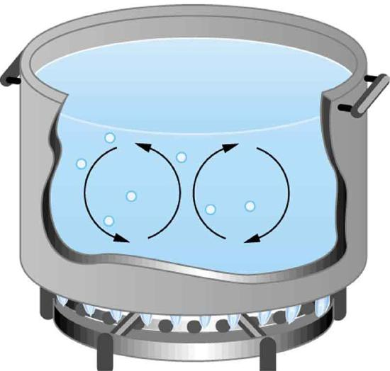
Take-Home Experiment: Convection Rolls in a Heated Pan
Take two small pots of water and use an eye dropper to place a drop of food coloring near the bottom of each. Leave one on a bench top and heat the other over a stovetop. Watch how the color spreads and how long it takes the color to reach the top. Watch how convective loops form.
Most houses are not airtight: air goes in and out around doors and windows, through cracks and crevices, following wiring to switches and outlets, and so on. The air in a typical house is completely replaced in less than an hour. Suppose that a moderately-sized house has inside dimensions \(12.0m \times 18.0 m \times 3.00 m\) high, and that all air is replaced in 30.0 min. Calculate the heat transfer per unit time in watts needed to warm the incoming cold air by \(10.0^oC\) thus replacing the heat transferred by convection alone.
Heat is used to raise the temperature of air so that \(Q = mc\Delta T\). The rate of heat transfer is then \(Q/t\), where \(t\) is the time for air turnover. We are given that \(\Delta T\) is \(10.0^oC\), but we must still find values for the mass of air and its specific heat before we can calculate \(Q\). The specific heat of air is a weighted average of the specific heats of nitrogen and oxygen, which gives \(c = c_p \approx 1000 \, J/kg \cdot ^oC\) from the table (note that the specific heat at constant pressure must be used for this process).
This rate of heat transfer is equal to the power consumed by about forty-six 100-W light bulbs. Newly constructed homes are designed for a turnover time of 2 hours or more, rather than 30 minutes for the house of this example. Weather stripping, caulking, and improved window seals are commonly employed. More extreme measures are sometimes taken in very cold (or hot) climates to achieve a tight standard of more than 6 hours for one air turnover. Still longer turnover times are unhealthy, because a minimum amount of fresh air is necessary to supply oxygen for breathing and to dilute household pollutants. The term used for the process by which outside air leaks into the house from cracks around windows, doors, and the foundation is called “air infiltration.”
A cold wind is much more chilling than still cold air, because convection combines with conduction in the body to increase the rate at which energy is transferred away from the body. The table below gives approximate wind-chill factors, which are the temperatures of still air that produce the same rate of cooling as air of a given temperature and speed. Wind-chill factors are a dramatic reminder of convection’s ability to transfer heat faster than conduction. For example, a 15.0 m/s wind at \(0^oC\) has the chilling equivalent of still air at about \(-18^oC\).
Moving air temperature Wind speed (m/s)
| \(^oC\) | 2 | 5 | 10 | 15 | 20 |
|---|---|---|---|---|---|
| 5 | 3 | -1 | -8 | -10 | -12 |
| 2 | 0 | -7 | -12 | -16 | -18 |
| 0 | -2 | -9 | -15 | -18 | -20 |
| -5 | -7 | -15 | -22 | -26 | -29 |
| -10 | -12 | -21 | -29 | -34 | -36 |
| -20 | -23 | -34 | -44 | -50 | -52 |
| -40 | -44 | -59 | -73 | -82 | -84 |
Although air can transfer heat rapidly by convection, it is a poor conductor and thus a good insulator. The amount of available space for airflow determines whether air acts as an insulator or conductor. The space between the inside and outside walls of a house, for example, is about 9 cm (3.5 in) —large enough for convection to work effectively. The addition of wall insulation prevents airflow, so heat loss (or gain) is decreased. Similarly, the gap between the two panes of a double-paned window is about 1 cm, which prevents convection and takes advantage of air’s low conductivity to prevent greater loss. Fur, fiber, and fiberglass also take advantage of the low conductivity of air by trapping it in spaces too small to support convection, as shown in the figure. Fur and feathers are lightweight and thus ideal for the protection of animals.
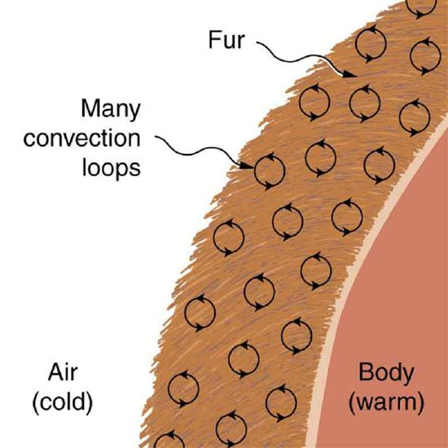
Some interesting phenomena happenwhen convection is accompanied by a phase change. It allows us to cool off by sweating, even if the temperature of the surrounding air exceeds body temperature. Heat from the skin is required for sweat to evaporate from the skin, but without air flow, the air becomes saturated and evaporation stops. Air flow caused by convection replaces the saturated air by dry air and evaporation continues.
The average person produces heat at the rate of about 120 W when at rest. At what rate must water evaporate from the body to get rid of all this energy? (This evaporation might occur when a person is sitting in the shade and surrounding temperatures are the same as skin temperature, eliminating heat transfer by other methods.)
Energy is needed for a phase change \((Q = mL_v)\). Thus, the energy loss per unit time is \[\dfrac{Q}{t} = \dfrac{mL_v}{t} = 120 \, W = 120 \, J/s.\]
We divide both sides of the equation by \(L_v\) to find that the mass evaporated per unit time is \[\dfrac{m}{t} = \dfrac{120 \, J/s}{L_v}.\]
(1) Insert the value of the latent heat from[link], \(L_v = 2430 \, kJ/kg = 2430 \, J/g\). This yields \[\dfrac{m}{t} = \dfrac{120 \, J/s}{2430 \, J/g} = 0.0494 \, g/s = 2.96 \, g/min.\]
Evaporating about 3 g/min seems reasonable. This would be about 180 g (about 7 oz) per hour. If the air is very dry, the sweat may evaporate without even being noticed. A significant amount of evaporation also takes place in the lungs and breathing passages.
Another important example of the combination of phase change and convection occurs when water evaporates from the oceans. Heat is removed from the ocean when water evaporates. If the water vapor condenses in liquid droplets as clouds form, heat is released in the atmosphere. Thus, there is an overall transfer of heat from the ocean to the atmosphere. This process is the driving power behind thunderheads, those great cumulus clouds that rise as much as 20.0 km into the stratosphere. Water vapor carried in by convection condenses, releasing tremendous amounts of energy. This energy causes the air to expand and rise, where it is colder. More condensation occurs in these colder regions, which in turn drives the cloud even higher. Such a mechanism is called positive feedback, since the process reinforces and accelerates itself. These systems sometimes produce violent storms, with lightning and hail, and constitute the mechanism driving hurricanes.
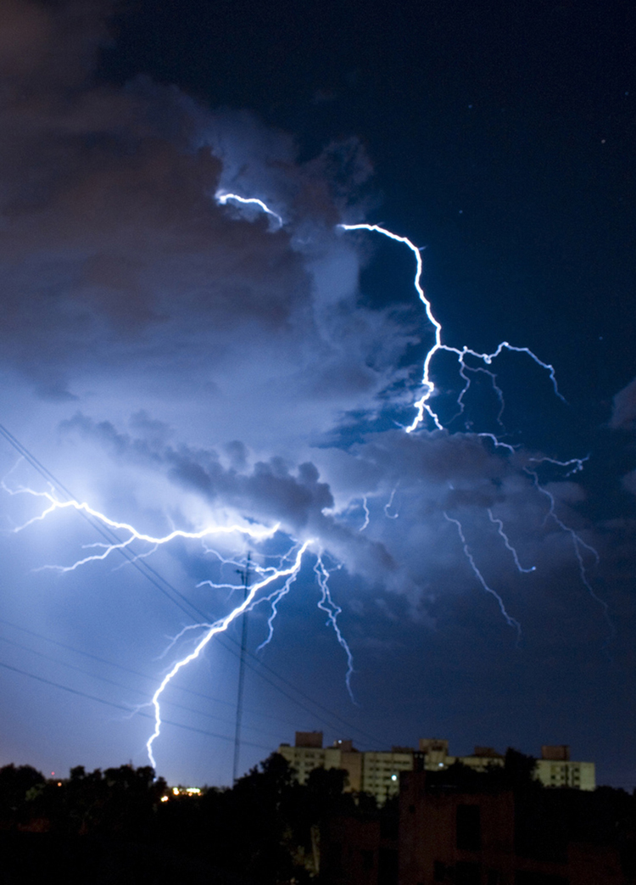
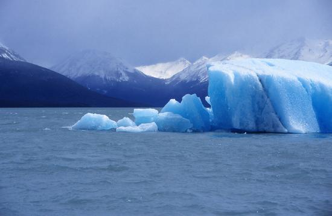
The movement of icebergs is another example of convection accompanied by a phase change. Suppose an iceberg drifts from Greenland into warmer Atlantic waters. Heat is removed from the warm ocean water when the ice melts and heat is released to the land mass when the iceberg forms on Greenland.
Exercise
Explain why using a fan in the summer feels refreshing!
Using a fan increases the flow of air: warm air near your body is replaced by cooler air from elsewhere. Convection increases the rate of heat transfer so that moving air “feels” cooler than still air.
📖 OpenStax College Physics, Section 14.6. openstax.org · CC BY 4.0
- Discuss heat transfer by radiation.
- Explain the power of different materials.
You can feel the heat transfer from a fire and from the Sun. Similarly, you can sometimes tell that the oven is hot without touching its door or looking inside—it may just warm you as you walk by. The space between the Earth and the Sun is largely empty, without any possibility of heat transfer by convection or conduction. In these examples, heat is transferred by radiation. That is, the hot body emits electromagnetic waves that are absorbed by our skin: no medium is required for electromagnetic waves to propagate. Different names are used for electromagnetic waves of different wavelengths: radio waves, microwaves, infraredradiation, visible light, ultraviolet radiation, X-rays, and gamma rays.
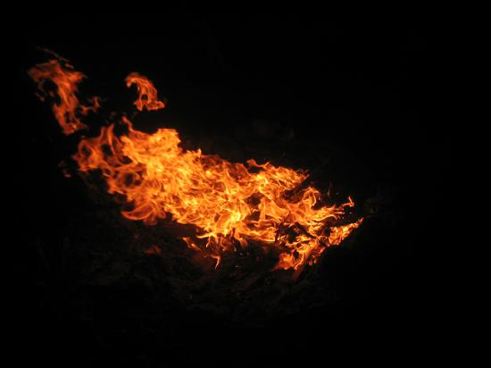
The energy of electromagnetic radiation depends on the wavelength (color) and varies over a wide range: a smaller wavelength (or higher frequency) corresponds to a higher energy. Because more heat is radiated at higher temperatures, a temperature change is accompanied by a color change. Take, for example, an electrical element on a stove, which glows from red to orange, while the higher-temperature steel in a blast furnace glows from yellow to white. The radiation you feel is mostly infrared, which corresponds to a lower temperature than that of the electrical element and the steel. The radiated energy depends on its intensity, which is represented in the figure below by the height of the distribution.
Electromagnetic Wavesexplains more about the electromagnetic spectrum andIntroduction to Quantum Physicsdiscusses how the decrease in wavelength corresponds to an increase in energy.
![Figure a shows a graph of the intensity of electromagnetic radiation versus wavelength in nano meters. There are three curves on the graph labeled, from top to bottom, six thousand K, four thousand K, and three thousand K. The top curve peaks sharply at the beginning near about five hundred nano meters in what is labeled the visible range (violet to red). After the peak, this curve decays strongly by three thousand nano meters. The middle curve peaks more softly near nine hundred nano meters at a height about one third that of the first curve, and decays by three thousand nano meters. The lowest curve peaks very softly near one thousand nano meters curve and decreases slowly for higher wavelengths. The region between one thousand to two thousand nano meters is labeled the infrared range. Figure b shows two burners of a gas stove. One burner is closer and the other is in the background. The flame of the near burner is blue at the bottom and gradually changes to orange as you approach the top of the flame. The flame of the background burner is smaller and is essentially completely blue.](images/ch14/fig14-24-figure-a-shows-a-graph-of-the-intensity-.jpg)
All objects absorb and emit electromagnetic radiation. The rate of heat transfer by radiation is largely determined by the color of the object. Black is the most effective, and white is the least effective. People living in hot climates generally avoid wearing black clothing, for instance. Similarly, black asphalt in a parking lot will be hotter than adjacent gray sidewalk on a summer day, because black absorbs better than gray. The reverse is also true—black radiates better than gray. Thus, on a clear summer night, the asphalt will be colder than the gray sidewalk, because black radiates the energy more rapidly than gray. Anideal radiatoris the same color as anideal absorber, and captures all the radiation that falls on it. In contrast, white is a poor absorber and is also a poor radiator. A white object reflects all radiation, like a mirror. (A perfect, polished white surface is mirror-like in appearance, and a crushed mirror looks white.)
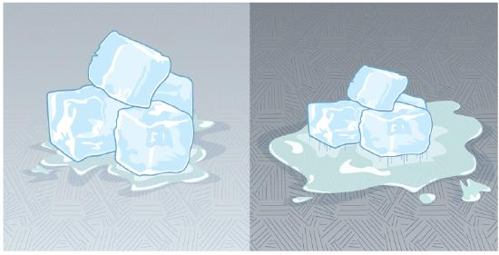
Gray objects have a uniform ability to absorb all parts of the electromagnetic spectrum. Colored objects behave in similar but more complex ways, which gives them a particular color in the visible range and may make them special in other ranges of the nonvisible spectrum. Take, for example, the strong absorption of infrared radiation by the skin, which allows us to be very sensitive to it.
![In the figure two black and two silver polished blocks are shown. Radiant energy is incident on the first black block. Most of the energy is absorbed and only a small amount is shown as reflected. On the second black block more of the energy from inside the block is emitted than is retained. On the first silver polished block the incident energy is mostly reflected and only a small portion is absorbed. On the second silver polished block the energy from inside is mostly retained and only a small amount of energy is emitted.](images/ch14/fig14-26-in-the-figure-two-black-and-two-silver-p.jpg)
The rate of heat transfer by emitted radiation is determined by theStefan-Boltzmann law of radiation:
where \(\sigma = 5.67 \times 10^{-8} \, J/s \cdot m^2 \cdot k^4\) is the Stefan-Boltzmann constant, \(A\) is the surface area of the object, and \(T\) is its absolute temperature in kelvin. The symbol \(e\) stands for theemissivityof the object, which is a measure of how well it radiates. An ideal jet-black (or black body) radiator has \(e = 1\), whereas a perfect reflector has \(e = 0\). Real objects fall between these two values. Take, for example, tungsten light bulb filaments which have an \(e\) of about 0.5, and carbon black (a material used in printer toner), which has the (greatest known) emissivity of about 0.99.
The radiation rate is directly proportional to thefourth powerof the absolute temperature—a remarkably strong temperature dependence. Furthermore, the radiated heat is proportional to the surface area of the object. If you knock apart the coals of a fire, there is a noticeable increase in radiation due to an increase in radiating surface area.
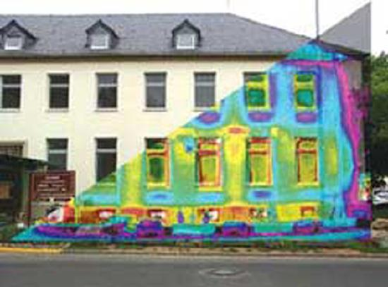
Skin is a remarkably good absorber and emitter of infrared radiation, having an emissivity of 0.97 in the infrared spectrum. Thus, we are all nearly (jet) black in the infrared, in spite of the obvious variations in skin color. This high infrared emissivity is why we can so easily feel radiation on our skin. It is also the basis for the use of night scopes used by law enforcement and the military to detect human beings. Even small temperature variations can be detected because of the \(T^4\) dependence. Images, calledthermographs, can be used medically to detect regions of abnormally high temperature in the body, perhaps indicative of disease. Similar techniques can be used to detect heat leaks in homes Figure , optimize performance of blast furnaces, improve comfort levels in work environments, and even remotely map the Earth’s temperature profile.
All objects emit and absorb radiation. Thenetrate of heat transfer by radiation (absorption minus emission) is related to both the temperature of the object and the temperature of its surroundings. Assuming that an object with a temperature \(T_1\) is surrounded by an environment with uniform temperature \(T_2\) thenet rate of heat transfer by radiationis \[\dfrac{Q_{net}}{t} = \sigma e A(T_2^4 - T_1^4),\] where \(e\) is the emissivity of the object alone. In other words, it does not matter whether the surroundings are white, gray, or black; the balance of radiation into and out of the object depends on how well it emits and absorbs radiation. When \(T_2 > T_1\), the quantity \(Q_{net}/t\) is positive; that is, the net heat transfer is from hot to cold.
Take-Home Experiment: Temperature in the Sun
Place a thermometer out in the sunshine and shield it from direct sunlight using an aluminum foil. What is the reading? Now remove the shield, and note what the thermometer reads. Take a handkerchief soaked in nail polish remover, wrap it around the thermometer and place it in the sunshine. What does the thermometer read?
What is the rate of heat transfer by radiation, with an unclothed person standing in a dark room whose ambient temperature is \(22.0^oC\). The person has a normal skin temperature of \(33.0^oC\) and a surface area of \(1.50 \, m^2\). The emissivity of skin is 0.97 in the infrared, where the radiation takes place.
We can solve this by using the equation for the rate of radiative heat transfer.
Insert the temperatures values \(T_2 = 295 \, K\) and \(T_1 = 306 \, K\), so that \[\dfrac{Q}{t} = \sigma e A(T_2^4 - T_1^4)\] \[= (5.67 \times 10^{-8} \, J/s \cdot m^2 \cdot k^4)(0.97)(1.50 \, m^2) [(295 \, K)^4 - (306 \, K)^4]\] \[= -99 \, J/s = -99 \, W.\]
This value is a significant rate of heat transfer to the environment (note the minus sign), considering that a person at rest may produce energy at the rate of 125 W and that conduction and convection will also be transferring energy to the environment. Indeed, we would probably expect this person to feel cold. Clothing significantly reduces heat transfer to the environment by many methods, because clothing slows down both conduction and convection, and has a lower emissivity (especially if it is white) than skin.
The Earth receives almost all its energy from radiation of the Sun and reflects some of it back into outer space. Because the Sun is hotter than the Earth, the net energy flux is from the Sun to the Earth. However, the rate of energy transfer is less than the equation for the radiative heat transfer would predict because the Sun does not fill the sky. The average emissivity (e) of the Earth is about 0.65, but the calculation of this value is complicated by the fact that the highly reflective cloud coverage varies greatly from day to day. There is a negative feedback (one in which a change produces an effect that opposes that change) between clouds and heat transfer; greater temperatures evaporate more water to form more clouds, which reflect more radiation back into space, reducing the temperature. The often mentionedgreenhouse effectis directly related to the variation of the Earth’s emissivity with radiation type (see the figure given below). The greenhouse effect is a natural phenomenon responsible for providing temperatures suitable for life on Earth. The Earth’s relatively constant temperature is a result of the energy balance between the incoming solar radiation and the energy radiated from the Earth. Most of the infrared radiation emitted from the Earth is absorbed by carbon dioxide \((CO_2)\) and water \((H_2O)\) in the atmosphere and then re-radiated back to the Earth or into outer space. Re-radiation back to the Earth maintains its surface temperature about \(40^oC\) higher than it would be if there was no atmosphere, similar to the way glass increases temperatures in a greenhouse.
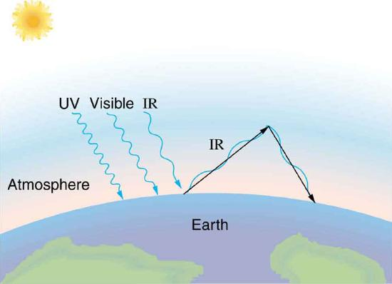
The greenhouse effect is also central to the discussion of global warming due to emission of carbon dioxide and methane (and other so-called greenhouse gases) into the Earth’s atmosphere from industrial production and farming. Changes in global climate could lead to more intense storms, precipitation changes (affecting agriculture), reduction in rain forest biodiversity, and rising sea levels.
Heating and cooling are often significant contributors to energy use in individual homes. Current research efforts into developing environmentally friendly homes quite often focus on reducing conventional heating and cooling through better building materials, strategically positioning windows to optimize radiation gain from the Sun, and opening spaces to allow convection. It is possible to build a zero-energy house that allows for comfortable living in most parts of the United States with hot and humid summers and cold winters.
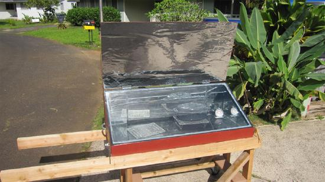
Conversely, dark space is very cold, about \(3K (-454^oF)\), so that the Earth radiates energy into the dark sky. Owing to the fact that clouds have lower emissivity than either oceans or land masses, they reflect some of the radiation back to the surface, greatly reducing heat transfer into dark space, just as they greatly reduce heat transfer into the atmosphere during the day. The rate of heat transfer from soil and grasses can be so rapid that frost may occur on clear summer evenings, even in warm latitudes.
Exercise
What is the change in the rate of the radiated heat by a body at the temperature \(T_1 = 20^oC\) compared to when the body is at the temperature \(T_2 = 40^oC\)?
The radiated heat is proportional to the fourth power of the absolute temperature. Because \(T_1 = 293 \, K\) and \(T_2 = 313 \, K\), the rate of heat transfer increases by about 30 percent of the original rate.
Career Connection: Energy Conservation Consultation
The cost of energy is generally believed to remain very high for the foreseeable future. Thus, passive control of heat loss in both commercial and domestic housing will become increasingly important. Energy consultants measure and analyze the flow of energy into and out of houses and ensure that a healthy exchange of air is maintained inside the house. The job prospects for an energy consultant are strong.
Problem Solving Strategies for the Methods of Heat Transfer
📖 OpenStax College Physics, Section 14.7. openstax.org · CC BY 4.0
| Section | Title |
|---|---|
| 14.1 | 14.1: Heat |
| 14.2 | 14.2: Temperature Change and Heat Capacity |
| 14.3 | 14.3: Phase Change and Latent Heat |
| 14.4 | 14.4: Heat Transfer Methods |
| 14.5 | 14.5: Conduction |
| 14.6 | 14.6: Convection |
| 14.7 | 14.7: Radiation |